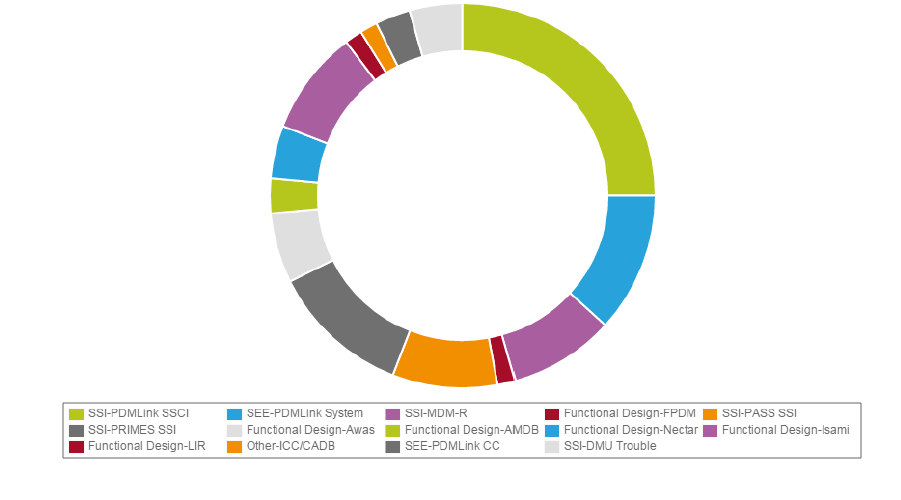
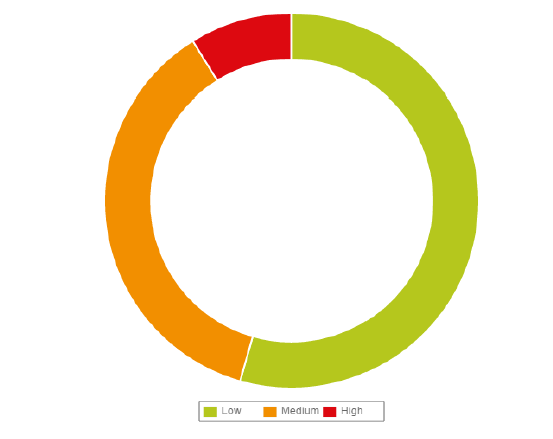
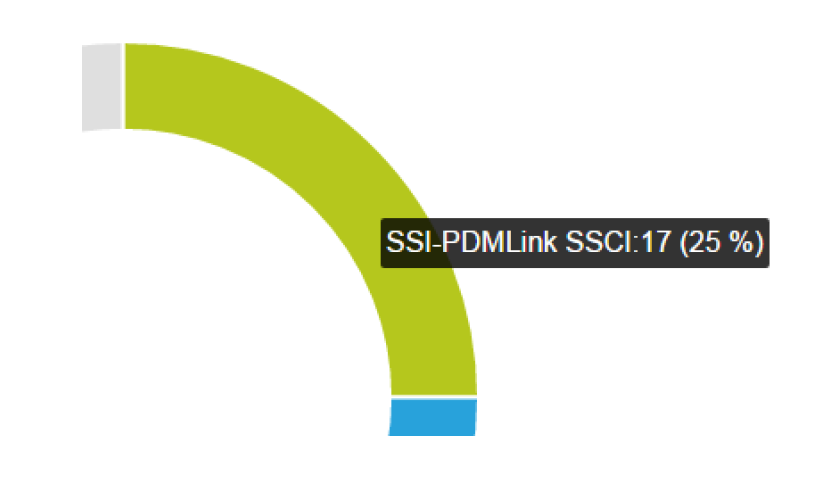
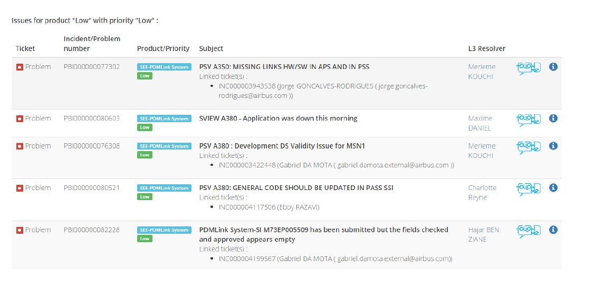
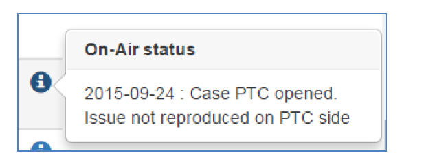
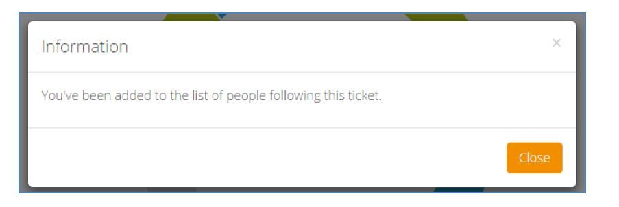

Lorem, ipsum dolor
Lorem, ipsum dolor

What is currently being investigated by the L3?
We defined as “Call Log” the number of unsolved cases.
The Call Log is the pool of incident/problem being investigated and assigned to L3 Support Experts,
in other
words, the IN PROGRESS tickets.
It does not include incidents/problems waiting for the deployment of a Change Note.
The “Call Log” is a great metric to keep an eye on because it can help you figure out how efficient the support process is. It can also help you gauge the customer’s happiness level related to your application; if they have a lot of IN PROGRESS tickets or critical ones, they’re bound to be unhappy.
How the PBOX can help?
The PBOX, through the “On-Air Desk” dashboard, intends to provide a synthetic view of tickets currently in progress at the L3 Support, the Call Log then.
It’s an instant view.
The Call Log is still moving, new incoming tickets and resolved tickets impacting the numbers.
To consult the history of the Call Log, you can use the On-Air History.
How to use this Dashboard?
Two charts are displayed by default.
- The Call Log filtered by application: 
- The Call Log filtered by priority: 
- You can navigate with the mouse upon the charts to have the number of each application: 
- To retrieve the tickets details of the data, click on the chart sections or “all links”: 
How to interact?
Two main actions are available for « In progress » tickets:
- The “On-Air Status”
Clicking on this icon will display a small summary of investigation:
 - The “Follow-me”
Clicking on this icon will notify the Support Expert in charge of the ticket:

The Support Expert in charge of the ticket will then send you a detailed status of the investigation.